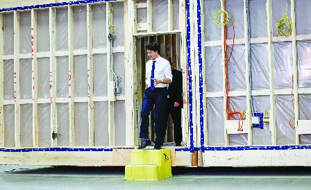

加拿大现正面临严重的住房危机，联邦政府已意识到需要更加高效的方法来兴建住房，因此正在推动模块化结构。（加新社）
加拿大现正面临严重的住房危机，联邦政府已意识到需要更加高效的方法来兴建住房，因此正在推动模块化结构，将为使用模块化结构和其他创新技术的柏文建筑商提供5亿元的贷款。
模块化结构是一种高效的住房建造方式，即房屋先在工厂被全部或部分组装，然后在现场安装。
总理杜鲁多在今年7月发表的一份声明中说：「当我谈及加快住房建造速度时，模块化住房是很重要的组成部分。」
根据全球谘询公司麦肯锡(McKinsey)发表的一份报告，模块化结构可使房屋建造速度提高20%至50%，同时还可以减少对社区的干扰、减少浪费、减少工人的人数以及可能节省多达20%的建造成本。
为加快模块化结构的采用，联邦政府将为使用模块化结构和其他创新技术的柏文建筑商提供5亿元的贷款。联邦政府还将为当地的革新住房解决方案以及开发新方案的研究提供经费拨款，并致力于减少监管障碍和标准化设计。
尽管一些计划已在进行之中，但建筑行业的业内人士说，模块化住房所占的市场份额只有微不足道的2%，需要采取更多的行动来为简化建造技术奠定基础，从而扩大模块化住房的市场份额。
加拿大住宅建筑商协会(CHBA)的行政总裁李凯文(Kevin Lee)说，除了对模块化住房的建造方法提供有针对性的支持之外，还需要解决住房市场中更加广泛的问题，诸如审批延误、针对模块化住房制订开发费和房屋按揭贷款的规则，使模块化结构真正获得发展动力。
他说：「有很多障碍，有很多风险，这就是我们为何需要所有这些系统性的变革，来确保投资获得回报。」
Z Modular是一间建造模块化住房的公司，该公司的个案显示，对模块化住房的支持正在增加，但依然不够。
Z Modular曾在去年秋季自豪地宣布，该公司是第一间从加拿大的房屋机构获得模块化柏文建造保险的公司，这有助于降低成本。
但在8个月后，Z Modular宣布将关闭位于安省基秦拿的工厂，并将重点放在美国市场，这将导致约150个工作岗位的流失。
该公司说，作出这一决定归咎于融资效率低下、成本上升和审批延误。
Z Modular是Zekelman Industries旗下的一间公司，Zekelman Industries的行政总裁泽克曼(Barry Zekelman)在今年6月发表的一份声明中说：「尽管住房危机显而易见，但加拿大缺乏远见，没有进行必要的改革来鼓励投资，并使发展商获得成功。」